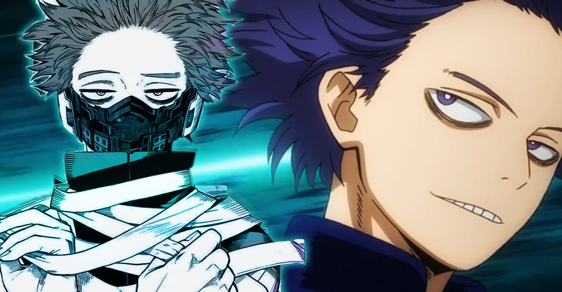

About Shinso
Hitoshi Shinso is a character from Boku no Hero Academia (also know as My Hero Academia). He has a desire to be a hero despite his quirk being seen as villianous. Due to the nature of his quirk he ended up in the gen ed class, but due to his hardwork and dedication he proved himself and has been moved to the hero course.
Shinso and his hero costume
Characterisitics
- His quirk is brainwash. He can control anyone who answers him.
- He has worked with Aizawa to learn how to use a capture device
- He has a support item that can change the sound of his voice
Shinso's Friends
Izuku Midoriya. Denki Kaminari. Neito Monoma. Shota Aizawa. Click on the links below to read more about them: